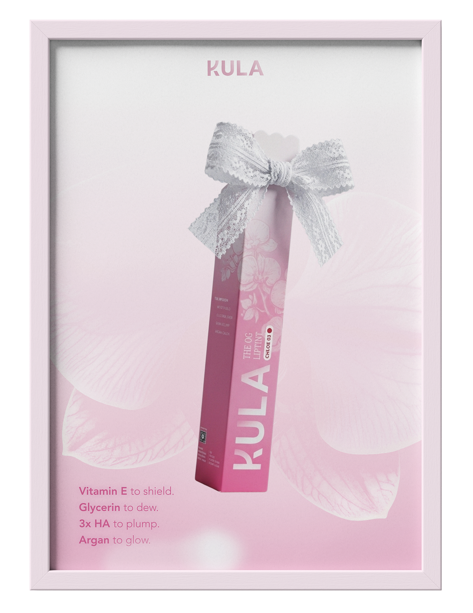
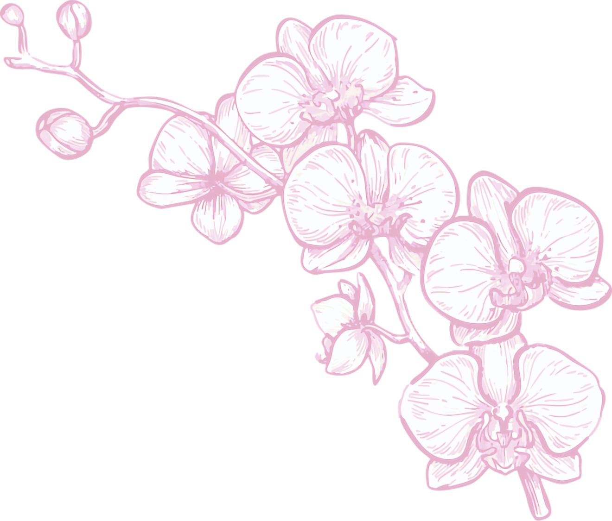
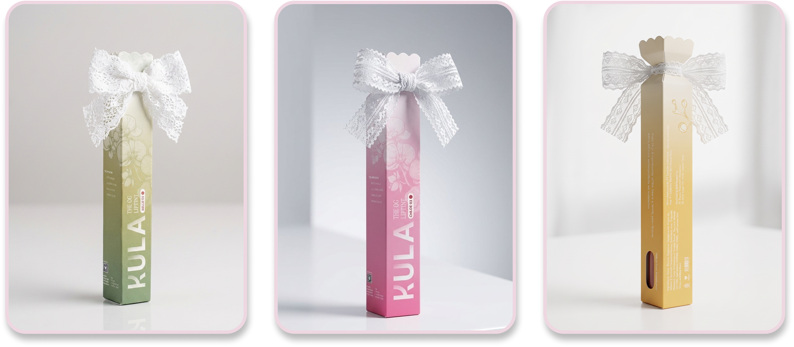

Concept Redesign · 2026
KULA

About the project
KULA (often known as KULA Beauty or Story of Kula) is an Indonesian local beauty brand that operates as a value-driven beauty brand. Instead of focusing solely on cosmetics, they tie their business to social impact by pledging a portion of their profits to various humanitarian and social causes, including aid for Palestine, supporting children with cancer, and animal welfare for stray animals.
The concept
Indonesian orchids
Delicate and enduring
Here, I used the Indonesian orchids because KULA believes in beauty that is both delicate and enduring. Like the orchid, they often grow in the wild, clinging to trees and thriving in humidity. They are delicate but incredibly tough.
The packaging
